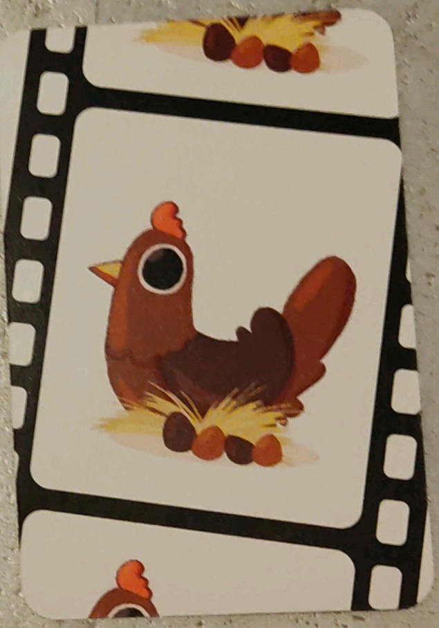
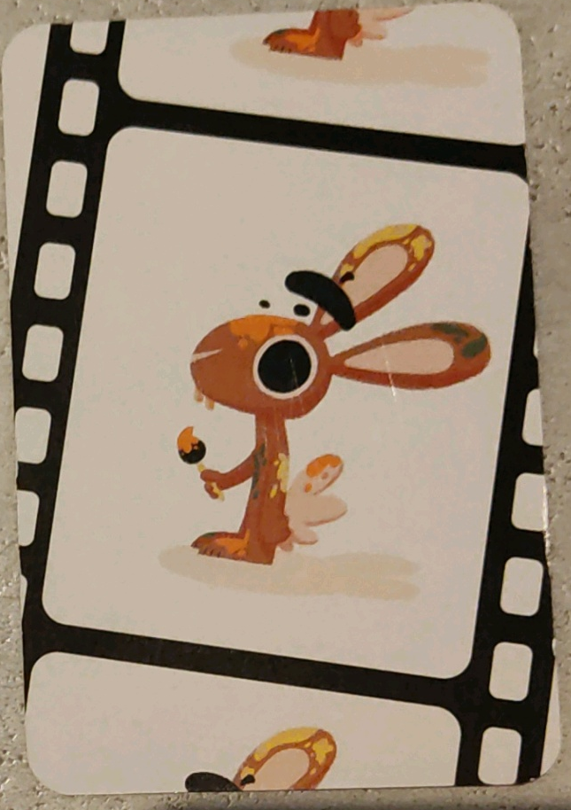
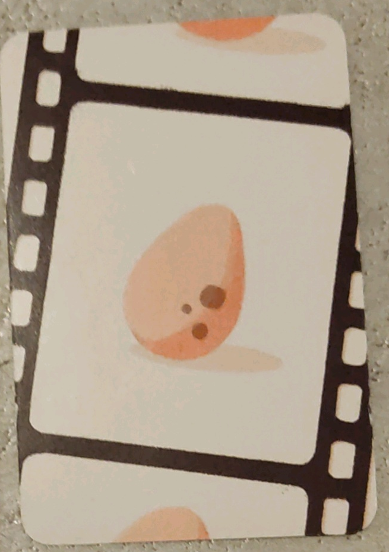
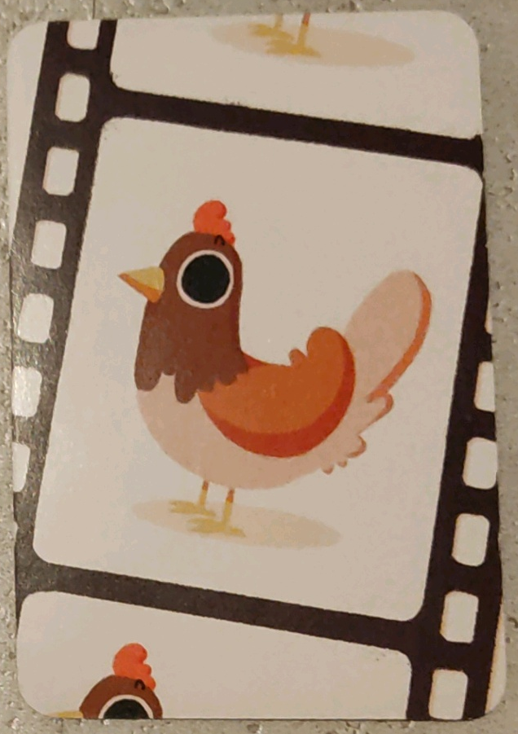
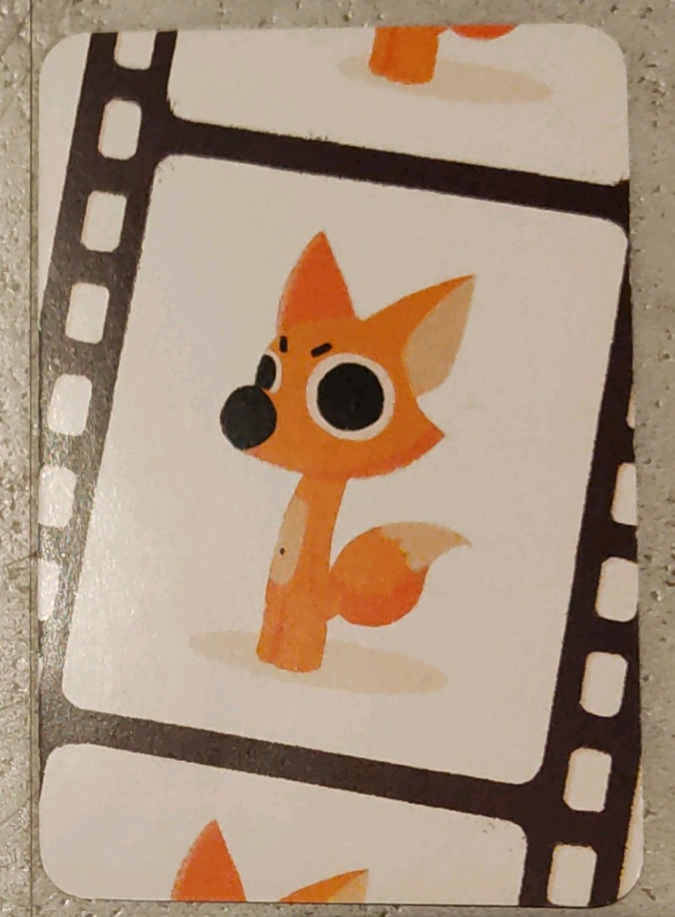
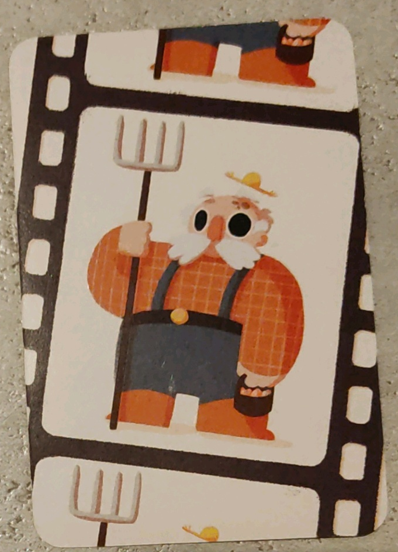
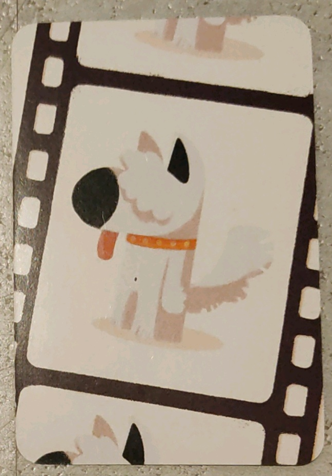
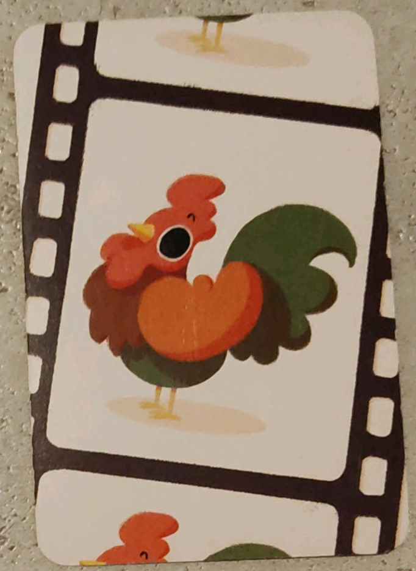
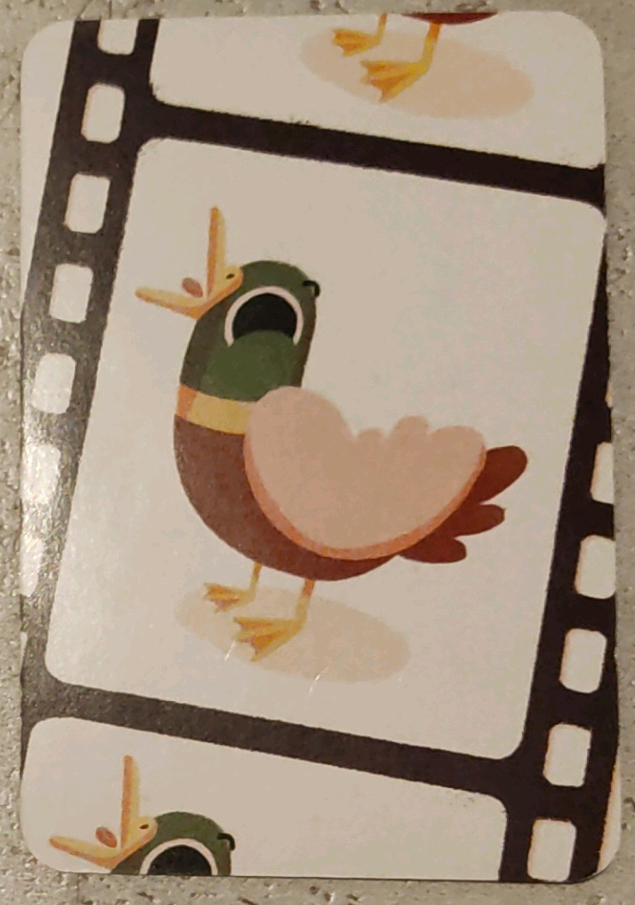

Partie en cours
Prochaine carte
C'est un oeuf mais qui n'est pas couvé par les poules ni ramassé par le fermier

Elle va couver un oeuf de Pâques déjà disponible

Remplace un oeuf disponible par un oeuf de Pâques
Jusqu'à la fin de la manche, quand un oeuf arrive, il le cache et ne le relâche qu'après que la prochaine carte ait été jouée

Il faut compter les oeufs

Couve un oeuf déjà disponible

Chasse une poule qui couve

Ramasse tous les oeufs et les cocottes

Chasse le prochain renard qui arrive
Attire la prochaine poule qui arrive

Déclenche la fin de la manche. Il faut dire le nombre d'oeufs disponible
Compte comme deux oeufs et ne peut pas être couvé
N'est pas repéré par le chien

Il faut dire "Coin!" pour le premier et "Coin! Coin!" pour le deuxième
Contenu que vous souhaitez afficher ici...